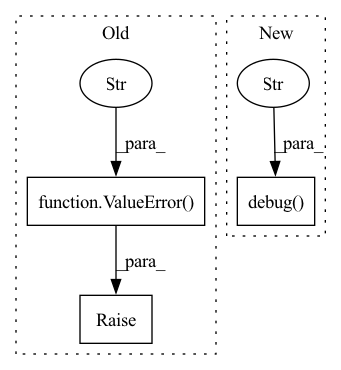

Pattern ID :16219
Before Change
azureml_parent_folder = expected / REGRESSION_TEST_AZUREML_PARENT_FOLDER
if azureml_parent_folder.is_dir():
if PARENT_RUN_CONTEXT is None:
raise ValueError(f"The set of expected test results in {expected} contains a folder "
f"{REGRESSION_TEST_AZUREML_PARENT_FOLDER}, but the present run is not a cross-validation "
"child run" )
compare_folder_contents(azureml_parent_folder, run=PARENT_RUN_CONTEXT)
After Change
if not expected.is_dir():
raise ValueError(f"Folder with expected files does not exist: {expected}")
logging.debug(f"Current working directory: {Path.cwd()}" )
messages = []
for (subfolder, message_prefix, actual_folder, run_to_compare) in \
[(REGRESSION_TEST_OUTPUT_FOLDER, "run output files", actual, None),
(REGRESSION_TEST_AZUREML_FOLDER, "AzureML outputs in present run", None, RUN_CONTEXT),In pattern: SUPERPATTERN
Frequency: 3
Non-data size: 3
Instances Fragment ID: 54183482
Project Name: microsoft/innereye-deeplearning
Commit Name: be36e392062eadc4863d09867f3b03fcf1b02d9e
Time: 2021-06-21
Author: antonsc@microsoft.com
File Name: InnerEye/ML/baselines_util.py
M Class Name: AnonimousClass
N Class Name: AnonimousClass
M Method Name: compare_folders_and_run_outputs(2)
N Method Name: compare_folders_and_run_outputs(2)
M Parent Class:
N Parent Class:
M File Name: InnerEye/ML/baselines_util.py
N File Name: InnerEye/ML/baselines_util.py
M Start Line: 290
M End Line: 302
N Start Line: 280
N End Line: 300
Before Change
except ValueError:
pass
raise ValueError(f"Can not deduce Ontology from IRI {iri}" )
def _create_phrasematcher(self, dfs, lowercase=False):
attr = "ORTH"
if lowercase:After Change
except ValueError:
pass
logging.debug(f"Can not deduce Ontology from IRI {iri}" )
return "entity"
def _create_phrasematcher(self, parsers: List[OntologyParser]):
orth_matcher = PhraseMatcher(self.nlp.vocab, attr="ORTH") Fragment ID: 54183483
Project Name: astrazeneca/kazu
Commit Name: e6b1e7e6235e8562c8164e4a5b1d6b4f946c3fab
Time: 2022-11-30
Author: richard.jackson4@astrazeneca.com
File Name: kazu/modelling/ontology_matching/ontology_matcher.py
M Class Name: OntologyMatcher
N Class Name: OntologyMatcher
M Method Name: _label_from_IRI(2)
N Method Name: _label_from_IRI(2)
M Parent Class:
N Parent Class:
M File Name: kazu/modelling/ontology_matching/ontology_matcher.py
N File Name: kazu/modelling/ontology_matching/ontology_matcher.py
M Start Line: 338
M End Line: 338
N Start Line: 336
N End Line: 337
Before Change
current_results = self.results[epoch]
overlapping_keys = set(metrics.keys()).intersection(current_results.keys())
if len(overlapping_keys) > 0:
raise ValueError(f"Unable to log metric with same name twice for epoch {epoch}: "
f"{", ".join(overlapping_keys)}" )
current_results.update(metrics)
else:
self.results[epoch] = metrics
After Change
@rank_zero_only
def log_metrics(self, metrics: DictStrFloat, step: Optional[int] = None) -> None:
logging.debug(f"StoringLogger step={step}: {metrics}" )
epoch_name = "epoch"
if epoch_name not in metrics:
// Metrics without an "epoch" key are logged during testing, for example
self.results_without_epoch.append(metrics) Fragment ID: 54183486
Project Name: microsoft/innereye-deeplearning
Commit Name: bf4cb628c65155c287959f4103ebe442b109e341
Time: 2021-11-03
Author: antonsc@microsoft.com
File Name: InnerEye/ML/lightning_loggers.py
M Class Name: StoringLogger
N Class Name: StoringLogger
M Method Name: log_metrics(3)
N Method Name: log_metrics(3)
M Parent Class: LightningLoggerBase
N Parent Class: LightningLoggerBase
M File Name: InnerEye/ML/lightning_loggers.py
N File Name: InnerEye/ML/lightning_loggers.py
M Start Line: 31
M End Line: 42
N Start Line: 32
N End Line: 55